💡 INFORMATION
✖
Pampanga
Ilocos
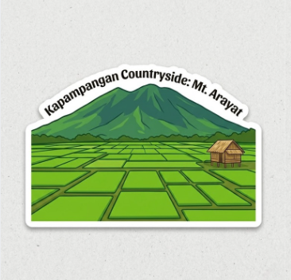
📍 Location
Pampanga is located in Central Luzon, Philippines. Its name comes
from “pangpang,” meaning riverbank.
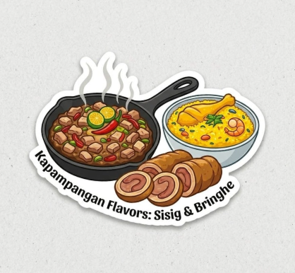
🍴 Cuisine
Known as the Culinary Capital of the Philippines, Pampanga is
famous
for sisig, bringhe, and morcon.
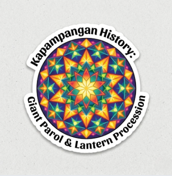
📜 History
The parol of Pampanga is a brightly crafted Christmas lantern
that
symbolizes faith, hope, and creativity of the Kapampangan people.
🎉 Festival
The Frog Festival or "Fiestang Tugak" celebrates the rich
agricultural heritage and the importance of frogs in the local ecosystem.
🧵 Clothing
Kapampangans take pride in their "Pukpuk" (hammered) silver
jewelry
and traditional embroidered Barongs made from fine local fibers.
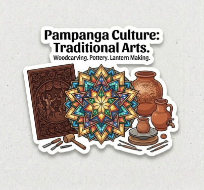
🏺 Culture
Kapampangan artisans are masters of hand-crafted traditions, from
the
vibrant glow of San Fernando's giant lanterns to the intricate woodcarvings and
pottery.
🏛️ Heritage
Known as the "Sistine Chapel of the Philippines" in Guagua is a
National Cultural Treasure famous for its stunning Baroque murals and architecture.
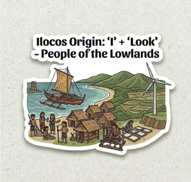
📍 Location
Derived from "Ylook," the name Ilocos refers to the "people of
the
lowlands," a coastal region where life is shaped by the sea, fertile plains, and a
resilient spirit.
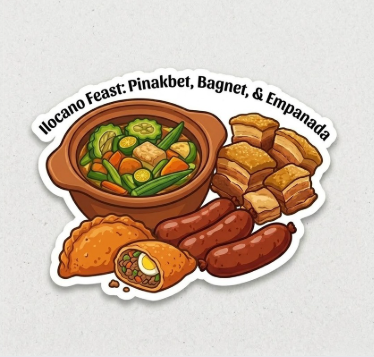
🍴 Cuisine
Ilocano food is full of bold, earthy flavors, from Pinakbet to
crispy
Bagnet and garlicky Longganisa.
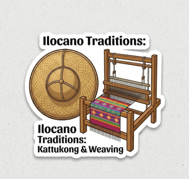
📜 History
Heritage shines in Abel Iloco fabric and the Kattukong hat,
showcasing Ilocano craftsmanship and resilience.
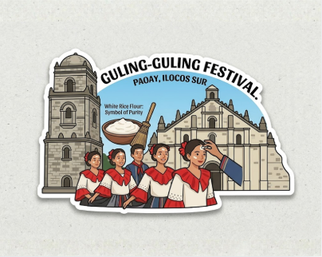
🎉 Festival
The Guling-Guling Festival in Paoay is a pre-Lenten celebration
where
people smear white rice flour on their foreheads to signify purity.
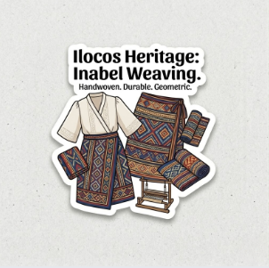
🧵 Clothing
Traditional Ilocano attire features "Inabel," a handwoven textile
known for its durability and intricate geometric patterns.
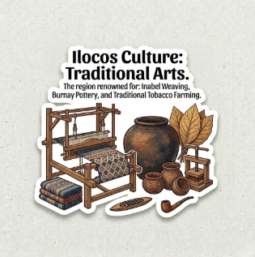
🏺 Culture
Ilocano culture is anchored in hardworking traditions, most
famously
seen in the intricate patterns of Inabel weaving, durable Burnay pottery, and a deep
history of tobacco farming.
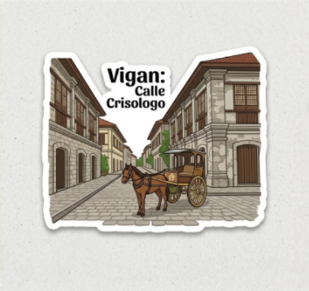
🏛️ Heritage
Vigan’s cobblestone streets on Calle Crisologo let you step back
in
time and explore the heritage town by traditional Kalesa.